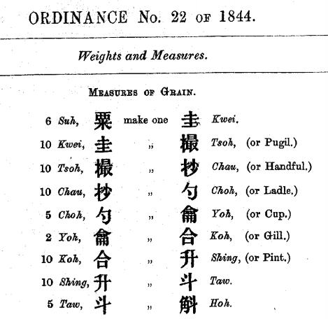

《孫子算經卷上》 "Sun Tzŭ's Computational Classic: Volume I"
§3. Units of capacity
This section introduces Chinese units of capacity
and gives the conversion rates between them.
A 'short scale' is used for named powers of ten.
Note that the next section (§4) uses a 'long scale'.
Six grains make one tablet;
ten tablets make one pinch;
ten pinches make one grab;
ten grabs make one ladle;
ten ladles make one gill;
ten gills make one quart;
ten quarts make one peck;
ten pecks make one barrel.
Kop (合),
a tenth of the Chinese litre, shêng (升).
Similar in size to the imperial gill.
In English, "gill" is read [dʒɪl], i.e. with a soft 'g'.
升： quart
Shêng (升), the Chinese litre,
of the same order of magnitude as the metric litre.
I have avoided rendering it "litre"
so as to keep SI units free,
and have instead chosen "quart",
after the similarly sized imperial quart.
斗： peck
Tou (斗),
ten Chinese litres, of similar size to the imperial peck.
A person of integrity will not 為五斗米折腰,
or "for five pecks of grain bend [at the] waist" (i.e. bow down).
Huk (斛), a hundred Chinese litres.
James Legge instead uses "bushel", which is only about forty litres,
but this is reasonable since later definitions
have a huk (斛) being only fifty Chinese litres
(rather than a hundred).
斛得六千萬粟。所以得知者、
[A] barrel resulteth in
six thousand myriad grains.
[And] that by which [one] getteth to know [this]:
six grains make one tablet;
ten tablets, [even] sixty grains, make one pinch;
ten pinches, [even] six hundred grains, make one grab;
ten grabs, [even] six thousand grains, make one ladle;
ten ladles, [even] six myriad grains, make one gill;
ten gills, [even] sixty myriad grains, make one quart;
ten quarts, [even] six hundred myriad grains, make one peck;
ten pecks, [even] six thousand myriad grains, make one barrel.
Ten barrels [be] six square-myriad grains; [an] hundred barrels, six multitude grains; [a] thousand barrels, six capital grains; [a] myriad barrels, six terrace grains;
ten myriad barrels, six haystack grains; [an] hundred myriad barrels, six soil grains; [a] thousand myriad barrels, six ditch grains;
Here we first encounter named powers of ten starting from 108,
which I have rendered literally.
[a] myriad myriad barrels
make one square-myriad barrels,
six stream grains;
ten square-myriad barrels,
six right grains; [an] hundred square-myriad barrels,
six carry grains.
An explanation for its use to denote a large power of ten is quoted
in Kʻang‑hee's entry for 秭:
載地不能載也, "[a] carry [even the] Earth [be] unable to carry"
(here the second "carry" is a verb,
read in the usual 去聲, i.e. tsoi3/zài).
For context, the usual phrase is 天覆地載,
"Heaven covereth [and] Earth carrieth".
Extended commentary
I can't be bothered looking up a reputable source
for the precise volume of a shêng (升)
when Sun Tzŭ's Computational Classic was first written,
but using 1 litre as an estimate,
we have:
In Volume II §10,
the conversion between
the capacity unit "barrel", huk (斛),
and the volume unit "cubic rule", chʻek (尺),
is given as
1 \unit{barrel~(斛)} = 1.62 \unit{rules~(尺)}^3.
Version C
has "pinches", tsʻot (撮),
and "grabs", chʻao (抄), the other way around.
The order given here is that in Versions A, B, and D,
and it is consistent with the order
in Hong Kong's Ordinance No. 22 of 1844 (PDF),
which has all of the above units
as well as the "cup", yok (龠),
equal to five ladles.
Note however that Ordinance No. 22 has the "barrel", huk (斛),
defined as five tou (斗) rather than ten tou (斗):

Unlike length and weight,
the British did not standardise Chinese capacity units
with respect to English units in 1885.
Here we have a 'short scale' where the named quantities go up
by a factor of 10: